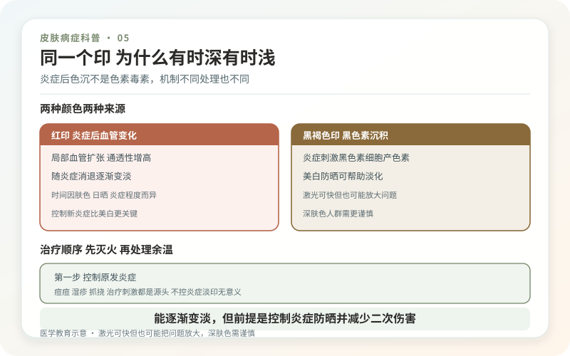
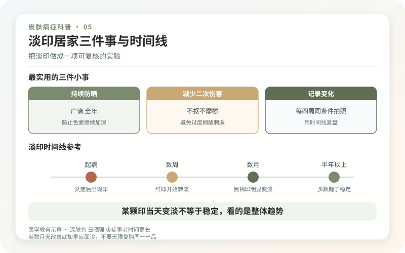

先分清概念：炎症后色素沉着，简称PIH，是皮肤发炎或受伤后黑色素生成、转运发生变化留下的颜色，不是毒素，也不等于永久瘢痕。痤疮、湿疹、毛囊炎、虫咬、烫伤、摩擦，以及刷酸、激光等造成的刺激都可能成为起点。肤色较深的人往往更明显、持续更久，但任何肤色都可能出现。
红印和黑印不是一回事。新鲜痘印偏红或紫，更多与血管和炎症有关；褐、灰褐色更符合色素沉着。凹陷、隆起或质地改变则提示瘢痕。三者可同时存在，因此一张照片很难决定该用“退红”“淡斑”还是瘢痕治疗。

为什么同一个印，有时深有时浅？
日晒会继续刺激黑色素，反复抠抓会制造新炎症，皮肤干燥或药物刺激也可能让边界更明显。光线、相机美颜和皮肤含水量还能改变视觉效果，所以早晚照镜子看到的差别，不一定代表病情一天内反复。
色素位于表皮时通常较棕，消退相对快；落入真皮后可能呈灰蓝色，往往更顽固。医生可结合病史、皮肤镜或伍德灯判断，但这些工具也不能准确预言“第几天清零”。恢复可能需要数月，深层色素甚至更久。

治疗顺序 先灭火，再处理余温
如果痘痘、湿疹或毛囊炎仍在发作，淡斑产品用得再多也会不断产生新色沉。第一步是明确原发病并控制炎症；第二步是广谱防晒、减少摩擦和刺激；第三步才是根据部位、深浅和肤色选择外用药或操作治疗。
壬二酸、维A酸类、氢醌及其他抑制色素的成分可能被医生采用，但它们并非越多越快。一次叠加三种酸、高浓度美白和家用美容仪，很容易先得到接触性皮炎，再得到一层更深的色沉。妊娠、备孕和哺乳期用药边界不同，不能照搬博主配方。
激光可以快一点，但也可能把问题放大
化学换肤、强脉冲光和不同类型激光对部分PIH有帮助，尤其在炎症稳定、诊断明确时。但能量过高、术后暴晒、肤色风险评估不足，都可能造成反黑、色素减退甚至瘢痕。PIH本身也可能随时间淡化，因此做项目之前要比较“不做会怎样”和“操作能增加多少收益”。
真正负责的方案会先做小面积测试或选择保守参数，明确术后护理和复评时间，而不是承诺“一次结痂脱落就干净”。色素刚受热后暂时变深，不必立刻继续加码；出现水疱、明显疼痛或渗液则要及时联系医生。
居家最实用的是三件小事
白天防晒并结合遮挡；清洁和保湿保持温和；停止挤痘、搓澡、刮痧和反复摩擦。身体部位还要检查衣物、鞋带或坐姿是否持续压磨。可以每四周在同一光线下拍照，记录颜色和面积，不要每天用不同滤镜比较。
柠檬汁、白醋、生姜和牙膏不会把真皮里的色素“溶出来”，酸碱刺激反而可能加重。口服所谓美白保健品也不能替代原发病治疗和防晒。
如果色斑没有明确炎症前史、单个斑块持续扩大、颜色杂乱、破溃出血，或伴全身皮肤广泛变黑，要重新诊断。看起来都是黑，背后的病因可以完全不同。
把“淡印”做成一项可复核的实验
先选一处最有代表性的区域，固定每天的基础护理和药物，不再同时更换洁面、防晒和三种美白成分。每四周在同一时间、光线、距离下拍照，并记录这一月是否有新痘、新湿疹或抓伤。若旧印变淡但不断有新炎症出现，重点仍应回到原发病，而不是继续升级淡斑浓度。
评价产品时至少看三件事：颜色有没有稳定变浅，周围皮肤有没有持续刺痛脱屑，是否出现边界更乱的浅色斑。美白并非只有“有效或无效”，刺激代价同样需要计入。脸和四肢的耐受不同，同一配方也不能机械全身复制。
面诊前准备这份时间线
写清最初是哪种皮炎或损伤、何时停止活动、色沉持续多久、是否做过激光或换肤、每次操作后的颜色走势。把原始照片带上，医生才能判断是自然消退、治疗改善还是二次炎症。若有瘢痕体质、长期药物或妊娠计划，也要提前说明。
咨询操作治疗时，要求明确目标色素可能在表皮还是真皮、治疗设备为何适合、测试点和观察期多长。没有这些解释，只用“你的色素很深所以要加能量”说服加项目，证据不足。真正安全的方案会允许等待，也会承认部分印记最终可能只改善、不清零。